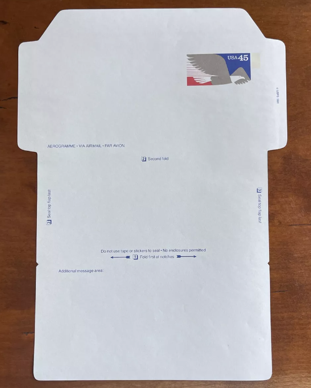

An aluminum appachatti.

A red, gold, and black batik tapestry depicting a Perahera ceremony.

A maroon sarong with a batik design.

An abnormal transvaginal ultrasound.

Three hammered brass plaques.

An elephant carved from ebony wood.

A 1984 Koh-i-Noor Rapidomatic drafting pencil.

A Tamil woman standing by a magnolia tree.

A two-tiered brass oil lamp.

Carved wooden birds, a coconut husk monkey, and carved, painted elephants.

Three Raksha masks.

A blank aerogram.

A vintage "I Heart NY" mug.